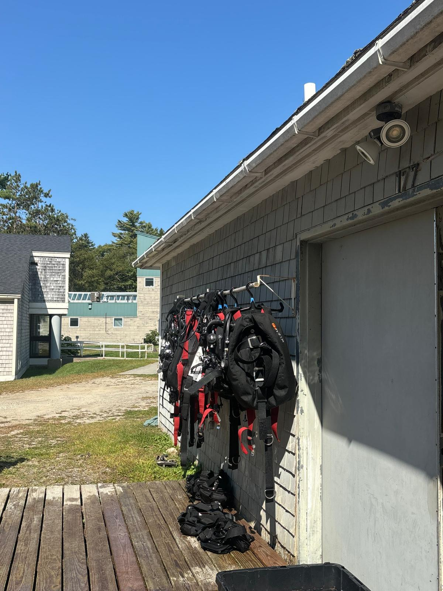

Local Information
Fort Wetherill State Park in Jamestown, Rhode Island, is a popular dive site where most local divers from the New England area experience their first few Open Water dives. The main scuba area, marked at the park's entrance and arrows, offers a scuba lot for parking and year-round portable restrooms. Two large benches provide divers enough room to put on gear. This site features three distinct dive areas: West Cove, East Cove, and Bull Point. West Cove is ideal for beginner divers, offering calm, protected waters, while East Cove suits intermediate training. Both coves offer dives to around 30 feet. Advanced divers can explore Bull Point, a dramatic wall teeming with marine life, with depths approaching 100 feet. Visibility at the park averages around 15 feet with tide considerations.
Tide Chart: https://www.weatherforyou.com/report/fort+wetherill+state+park-ri-tides
"All planned large outings, picnics, group activities, weddings, and scuba groups must contact the office at Goddard State Park for scheduling arrangements. All Scuba Groups must provide a certificate of insurance." For more information check: https://riparks.ri.gov/parks/fort-wetherill-state-park